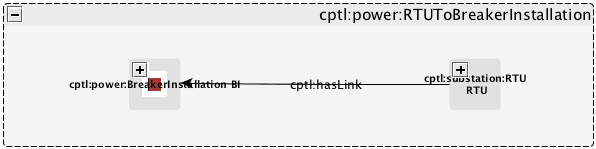
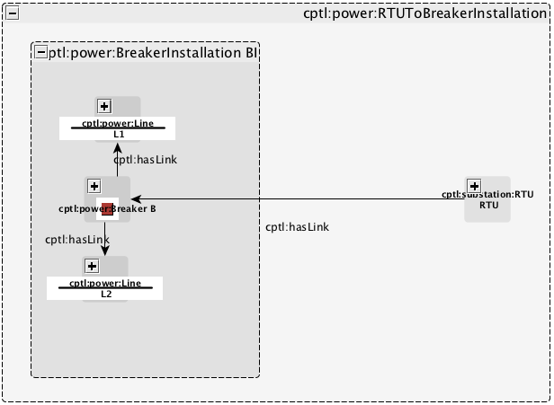
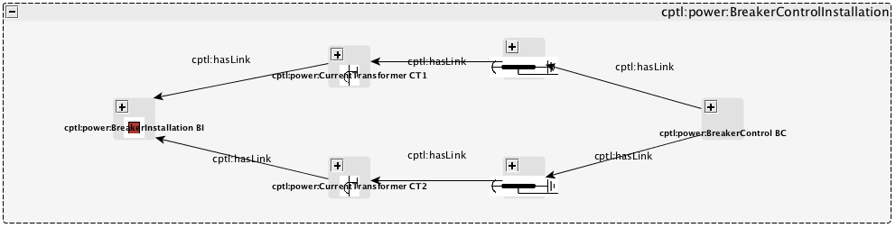
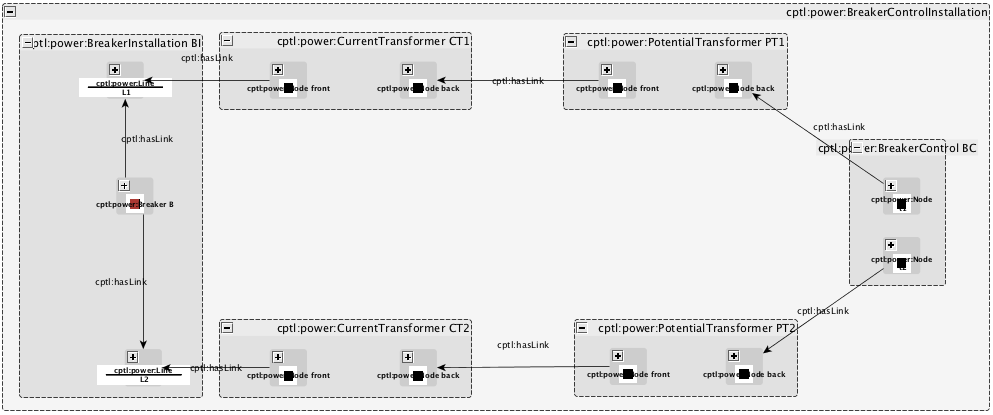
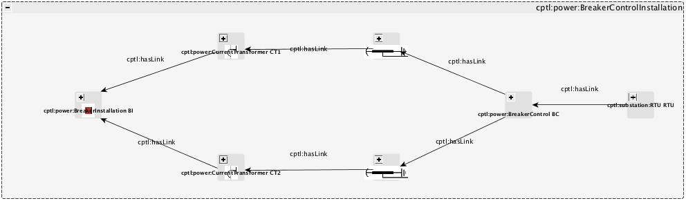
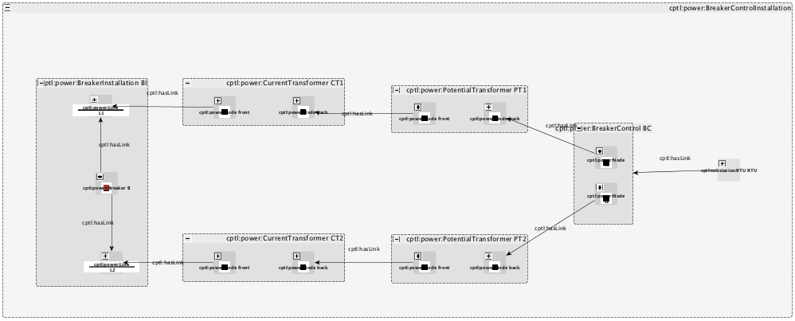

Although there are a wide variety of components within a power control network, we now demonstrate the capabilities of our language by constructing a module to encode and subsequently analyze part of a protection scheme for a transmission substation. Specifically, we focus on constructs for various breaker control schemes. By the end of this guide, you will understand how to do the following:
We are now going to define various constructs needed for breaker control schemes. There are a variety of different ways that one can configure a recloser control. Each of these alternatives is listed below. Please note that each of the components are composed from items in our catalog.
In the following images we see that an breaker B may be controlled by a direct connection with an RTU. One of the goals of our CPTL language is to be able to operate on cyber-physical systems at multiple levels of granularity. Therefore, we show how our yEd interface to CPTL-compliant GraphML files accomplishes this goal. Please note, the GraphML source is also available for this schematic.

High-level view of an RTU to Breaker installation.

More detailed view of the RTU to Breaker installation.
Another option is to connect the breaker to a breaker control. Please note, the GraphML source is also available for this schematic.

High-level view of a Breaker Control installation.

More detailed view of a Breaker Control installation.
Finally, we can connect the breaker control to an RTU so that the breaker may be manually controlled via SCADA. Please note, the GraphML source is also available for this schematic.

High-level view of a Breaker Control with RTU connected.

More detailed view of a Breaker Control with RTU connected.
TBD
{kind=link}